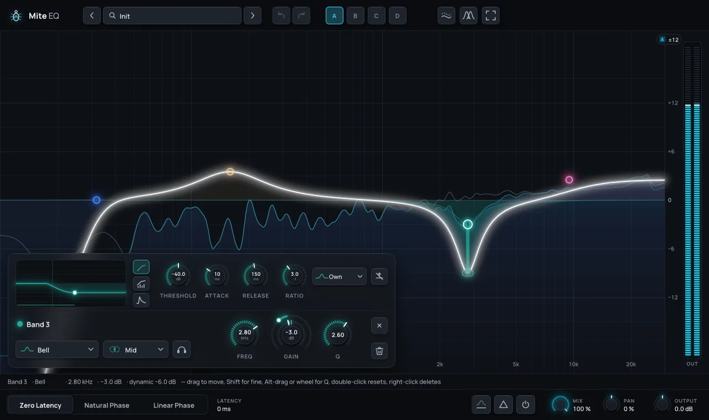

Windows
Unzip, then copy VST3\* to C:\Program Files\Common Files\VST3\ and
CLAP\* to C:\Program Files\Common Files\CLAP\. Rescan in your DAW.
Free · open source · VST3 & CLAP
Eighteen plugins for mixing, mastering and guitar: an EQ, compressors, a limiter, saturation, reverb, delay, a pitch editor and a full guitar rig. For Windows, macOS and Linux, under the GNU GPL.
Version 0.1, an early release · all releases · 64-bit · needs a GPU (the editors are GPU drawn)

Every control is something you can see and grab: curves you drag, histories you read, honest meters.
Unzip, then copy VST3\* to C:\Program Files\Common Files\VST3\ and
CLAP\* to C:\Program Files\Common Files\CLAP\. Rescan in your DAW.
Copy VST3/* to ~/Library/Audio/Plug-Ins/VST3/ and CLAP/* to
~/Library/Audio/Plug-Ins/CLAP/. The plugins are free and not notarized, so clear the quarantine once:
xattr -dr com.apple.quarantine ~/Library/Audio/Plug-Ins/VST3/Mite*.vst3 ~/Library/Audio/Plug-Ins/CLAP/Mite*.clapUniversal (Apple Silicon and Intel). No Audio Unit yet, so not for Logic Pro.
mkdir -p ~/.vst3 ~/.clap
cp -r VST3/* ~/.vst3/
cp -r CLAP/* ~/.clap/X11 or XWayland and a Vulkan GPU. Tested in REAPER.
MiteFX is written in Rust and licensed under the GNU General Public License v3: use it in any project, commercial or not, read every line, change it and share it under the same license.